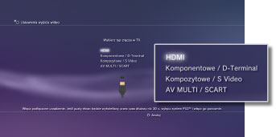
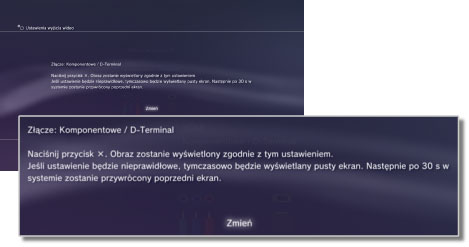
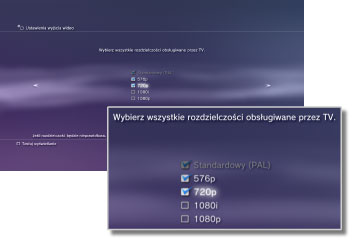
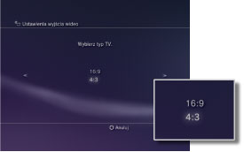
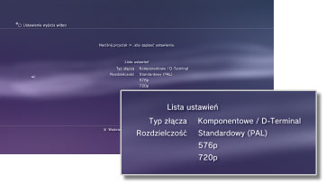

Ustawienia wyjścia wideo
Można dostosować ustawienia wyjścia wideo konsoli. Wybierz ustawienia wyjścia wideo najbardziej odpowiednie dla używanego telewizora.
1. |
Sprawdź, jaką rozdzielczość obsługuje telewizor.
Rozdzielczość (tryb wideo) zależy od typu telewizora. Szczegółowe informacje na ten temat można znaleźć w instrukcji dołączonej do telewizora.
|
2. |
Wybierz opcje  (Ustawienia) > (Ustawienia) >  (Ustawienia wyświetlania). (Ustawienia wyświetlania).
|
3. |
Wybierz opcję [Ustawienia wyjścia wideo].
|
4. |
Wybierz typ złącza w telewizorze.
Rozdzielczość (tryb wideo) zależy od typu używanego złącza.

Input connector on the TV
Złącze wejściowe w telewizorze |
Supported video modes (NTSC region) *1
Obsługiwane tryby wideo (region NTSC) *1 |
Supported video modes (PAL region) *1
Obsługiwane tryby wideo (region PAL) *1 |
| HDMI |
1 080p / 1 080i / 720p / 480p |
1 080p / 1 080i / 720p / 576p |
| Komponentowe / D-Terminal *2 |
1 080p / 1 080i / 720p / 480p / 480i |
1 080p / 1 080i / 720p / 576p / 576i |
| Kompozytowe / S Video *3 |
480i |
576i |
| AV MULTI / SCART *4 |
480p / 480i |
576p / 576i |
| *1 |
Opcje trybu wideo różnią się w zależności od regionu, w którym została zakupiona konsola PS3™. W Ameryce Północnej, Azji i innych regionach, gdzie używany jest tryb NTSC, tryb wideo 480i jest wyświetlany jako opcja [Standardowy (NTSC)]. W Europie i regionach, gdzie używany jest tryb PAL, tryb wideo 576i jest wyświetlany jako opcja [Standardowy (PAL)]. Szczegółowe informacje na ten temat można znaleźć w instrukcji dołączonej do urządzenia.
|
| *2 |
Złącze typu D-Terminal jest używane głównie w Japonii. Rozdzielczości obsługiwane przez złącza typu D1–D5 są następujące:
D5: 1 080p / 720p / 1 080i / 480p / 480i
D4: 1 080i / 720p / 480p / 480i
D3: 1 080i / 480p / 480i
D2: 480p / 480i
D1: 480i
|
| *3 |
Złącze kompozytowe jest używane do podłączenia kabla AV znajdującego się w zestawie z konsolą PS3™. S VIDEO jest formatem używanym głównie w Japonii.
|
| *4 |
AV MULTI jest formatem używanym głównie w Japonii. SCART jest formatem używanym głównie w Europie. Jeśli wybrana została opcja [AV MULTI / SCART], zostanie wyświetlony ekran umożliwiający wybór typu sygnału wyjściowego.
|
|
5. |
Zmień ustawienia wyjścia wideo.
Zmień rozdzielczość dla wyjścia wideo. W zależności od typu złącza wybranego w punkcie 4. ten ekran może nie zostać wyświetlony.

|
6. |
Ustaw rozdzielczość.
Wybierz wszystkie rozdzielczości obsługiwane przez używany telewizor. Dla wyjścia wideo zostanie automatycznie ustawiona najwyższa możliwa rozdzielczość spośród wybranych, odpowiednia dla odtwarzanej zawartości.*
* Rozdzielczość wideo jest wybierana według priorytetu, w następującej kolejności: 1 080p > 1 080i > 720p > 480p/576p > Standardowy (NTSC:480i/PAL:576i).
Jeśli w punkcie 4 została wybrana opcja [Kompozytowe / S Video], ekran wyboru rozdzielczości nie zostanie wyświetlony.
Jeśli została wybrana opcja [HDMI], można również ustawić automatyczne dostosowywanie częstotliwości (urządzenie HDMI musi być włączone). W takim przypadku ekran wyboru rozdzielczości nie zostanie wyświetlony.

|
7. |
Ustaw typ telewizora.
Wybierz typ używanego telewizora. Typ należy ustawić tylko wtedy, gdy używana będzie rozdzielczość SD (NTSC:480p / 480i, PAL: 576p / 576i), np. gdy w punkcie 4 została wybrana opcja [Kompozytowe / S Video] lub [AV MULTI / SCART].

|
8. |
Sprawdź ustawienia.
Sprawdź, czy obraz jest wyświetlany w prawidłowej rozdzielczości obsługiwanej przez telewizor. Naciskając przycisk  , można wrócić do poprzedniego ekranu i poprawić ustawienia. , można wrócić do poprzedniego ekranu i poprawić ustawienia.

|
9. |
Zapisz ustawienia.
Ustawienia wyjścia wideo zostaną zapisane w konsoli PS3™. Można przejść do wprowadzania ustawień wyjścia audio. Szczegółowe informacje na temat wyjścia audio można znaleźć w temacie (Ustawienia) >  (Ustawienia dźwięku) > [Ustawienia wyjścia audio] w niniejszej instrukcji. (Ustawienia dźwięku) > [Ustawienia wyjścia audio] w niniejszej instrukcji.
|
Wskazówki
- Kabel wymagany do przesyłania sygnału w określonym trybie wideo może nie znajdować się w zestawie z urządzeniem i może być konieczny jego zakup. Szczegółowe informacje można znaleźć w dokumentacji dołączonej do konsoli.
- Jeśli ustawienia wyjścia wideo nie są odpowiednie dla używanego telewizora, po zmianie rozdzielczości na ekranie może wystąpić brak obrazu. Po chwili pierwotna rozdzielczość ekranu powinna zostać jednak przywrócona. Jeśli brak obrazu na ekranie potrwa dłużej niż 30 sekund, należy wyłączyć konsolę. Następnie przez co najmniej pięć sekund należy przytrzymać przycisk zasilania znajdujący się w przedniej części konsoli, aby ją ponownie włączyć. W ustawieniach wyjścia wideo automatycznie zostanie przywrócona standardowa rozdzielczość.
- Jeśli urządzenie niezgodne ze standardem HDCP (High-bandwidth Digital Content Protection) zostanie podłączone do konsoli za pomocą kabla HDMI, mogą wystąpić problemy z odtwarzaniem obrazu i/lub dźwięku.
- Płyty wideo Blu-ray chronione prawami autorskimi można odtwarzać w rozdzielczości 1 080p tylko przy użyciu kabla HDMI podłączonego do urządzenia zgodnego ze standardem HDCP.